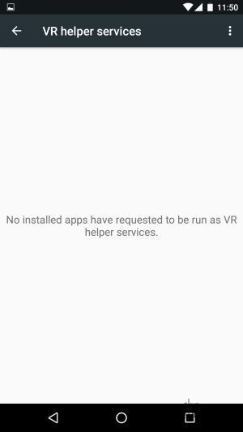

据国外媒体报道，在Android N的开发者预览版中支持VR功能，同时支持Khronos最新Vulkan API。其他还支持全新的3D渲染API（Vulkan）、Emoji Unicode 9、压感屏及面向平板的分屏多任务模式等。
在Android系统中，可以通过以下路径来访问这个炫酷的功能:1
Settings（设置） -> Apps（应用） -> Configure apps（应用配置） -> Special Access（特殊访问） -> VR helper services（虚拟现实辅助服务）
然后将显示接入这个API的应用列表，用户可以选择永许或者拒绝。这看起来似乎很快就可以有一个名为VR Listener”或者“VR helper”的应用了。

有关VR的细节暂不清楚，但《华尔街日报》在2月份提到过，Google正赶在推出自家基于智能机的头戴式装之前优化Android，让它能够更好地支持VR设备。
有关VR模式的一个猜想是，其会禁用手机的自锁机制，以避免使用一段时间后突然“黑屏”。此外，Google据说还在打造一款无需智能机或PC的独立装置。
根据报道还说有一个新硬件支持标志，名为“Config Sustained Performance Mode Supported”，Ars Technica的Ron Amadeo觉得它可能是一个特殊的功能，允许持续直接使用手机的CPU和GPU，跟Gear VR能够在兼容的三星手机上运行的方式类似。
我们知道谷歌的虚拟现实雄心远远超过了Cardboard，现在通过这个新版本系统的更新可以得道印证。在2016年第三季度Android N发布之前，谷歌至少在计划另外3个开发商预览版，所以我们可能会继续看到虚拟现实功能的增加。